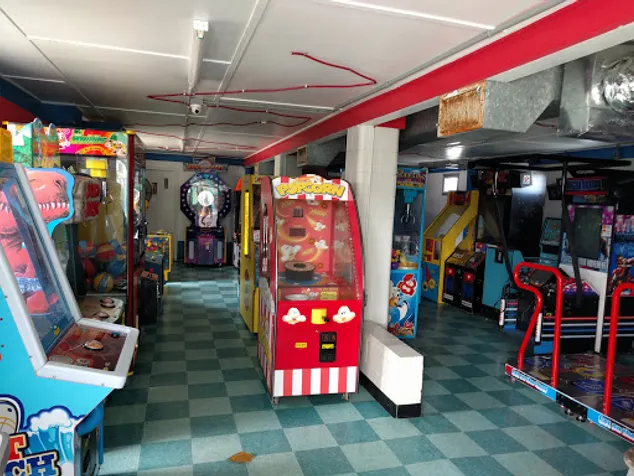
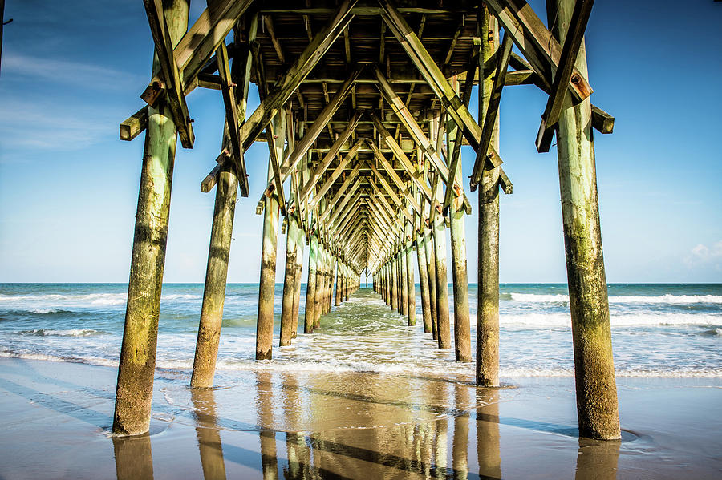
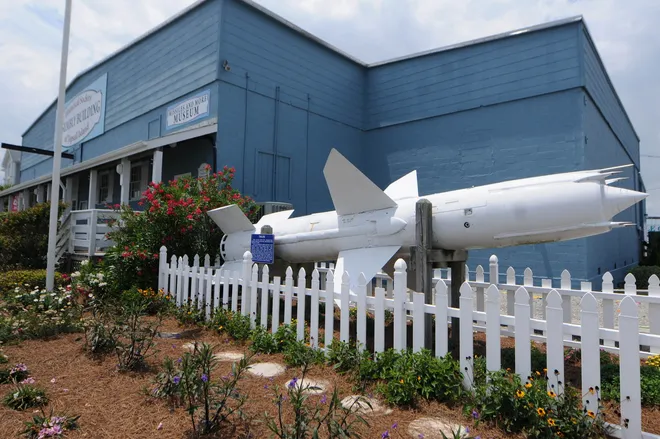

Things To Do
Topsail Beach Skating Rink

Roller skating like it was in the 70’s and 80’s. Family owned and operated since 1964. Open nightly 6pm to 10pm March through August and occasionally September through February.
Patio Playground
Ever since 1955 — the year after Hurricane Hazel ravaged Southeastern North Carolina's beaches — the miniature golf course Patio Playground has entertained pleasure seekers in Topsail Beach with its gently challenging greens.
Surf City Pier
Topsail Island's first ocean pier, the Surf City Pier, was originally built in 1948. It has been owned and operated by the Lore family since 1973. he Surf City Pier comes complete with large assortment of bait, fully stocked tackle shop, an eclectic collection of souvenirs fresh ground chuck burger's from the grill, and an outside covered dining area.
Missles and More Museum
The Missiles and More Museum came to life when a group of citizens were concerned for the future of the historical Assembly Building. The building, constructed 1946, was used by the government to assemble missiles for a secret missile operation being conducted on Topsail Island. These citizens began to pursue their goal to preserve the building and After several years of research, feasibility studies and meeting with state and local representatives the building was purchased. Thus the Assembly Building became the perfect place to house the Missiles and More Museum.